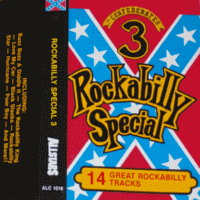

the Confederates - Rockabilly Special 3 (Album, 1981)
01 - Buzz Buzz A Diddle It (2:58)
02 - Rockin' Rhythm (2:30)
03 - I Can't Get On (2:59)
04 - The Rockabilly King (1:52)
05 - Love My Car (2:03)
06 - Who's Gonna Be Your Daddy (3:16)
07 - Black Slacks (2:28)
08 - Poor Boy (2:37)
09 - Rockabilly Star (2:09)
10 - Boppin' The Blues (2:21)
11 - Hurricane (2:34)
12 - Road Of Steel (3:30)
13 - Hard Rock Cafe (2:23)
14 - Rock'n Roll Ruby (2:32)
© Allstars :: [ALC 1019]
Notes
Review
291/366 (Project 366)
Today, this year, is Cassette Store Day. So, I decided to review the cassette release! Rock'n'Roll and Rockabilly Revival from Finland with fourteen great rockabilly tracks. Mostly covers, but there are also own compositions. The Confederates tried to do everything in a very entourage, cool, rockin' and stylistic way.
The first track "Buzz Buzz A Diddle" is made in a youthful, perky, rowdiness, rustic way and with a rough'n'raw manner. Sounds pretty with harmonica and vocals backing. The second track "Rockin' Rhythm" is, perhaps, with a classical Teddy Boy rockin' and rollin' rhythm, boogie and rockabilly tone. A voice with specific vocals and some furious guitar solos make it sound especially fine. "I Can't Get On" with nifty sound of rockin', rollin', shakin' and so on! While "The Rockabilly King" is, probably, a stereotypical Rockabilly and kind of Revival way of authentic Rock'n'Roll. That is actually wonderful. Since Rockabilly King Ok! The fifth track "Love My Car" is about horny and excited rockin' car fetish. Fancy enough. This and previous track are self-penned by the band. And sound itself is maybe teds powered. "Who's Gonna Be Your Daddy" with so nicely mood, different facets of Rockabilly Rock'n'Roll around authentic, fifties, revival times and is a classic from Steve Bloomfield. He is actually credites with five tracks on the album, and it is possible that Matchbox influenced the taste a lot. The seventh track is "Black Slacks", a fanciful composition with so waves and fun. Trousers theme is a practically always merry-making! And this is no exception.
The second side of the cassette starts with cover versions of "Poor Boy" and "Rockabilly Star". It turned out very cool, stylish, consistent and rather original tracks. Smooth rocking tunes, great sensations, no wonder the popularity of these things in the 80s. Continuing with cover versions of "Boppin' The Blues" and "Hurricane" also reinforces the chosen style of performance. An original Rockabilly sound that is heavily inspired by authentic times and old fashioned classy rockin' and rollin. But these covers are also directly influenced by the revival times, Teddy Boy scene and a lot of ardor! Great song "Road Of Steel" with its country rockabilly tone, "Hard Rock Cafe" with its Lyndon Need touch and cheerful "Rock'n Roll Ruby" round off the album magnificently.
So, rebel kind, raw sound, energy, passion... that's what makes it possible for a pleasant listening experience. Otherwise, not everything looks perfect. And, in general, some cover versions sound more significant in the original performance. But considering the great efforts, as well as interesting or accurate arrangements and the very fact of the album on cassette - satisfactory and all right.